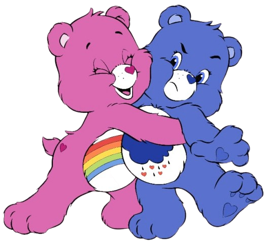

FELIZ AÑO NUEVO PARA LA NOVIA MAS BONITA DEL MUNDO, O SEA, TÚ 🫵🏼
Para ti
Gracias por estar en mi vida y por quedarte incluso en los momentos difíciles.
Gracias por toda la paciencia, tu cariño y por cada pequeño detalle que tienes conmigo, en especial la paciencia, tú dices que no soy insoportable, pero creo tdo lo contrario
Gracias por hacer mis días más bonitos y por ser una parte tan importante de mi historia, siendo mi persona favorita.
De verdad, gracias por todo lo que eres, nunca cambies.